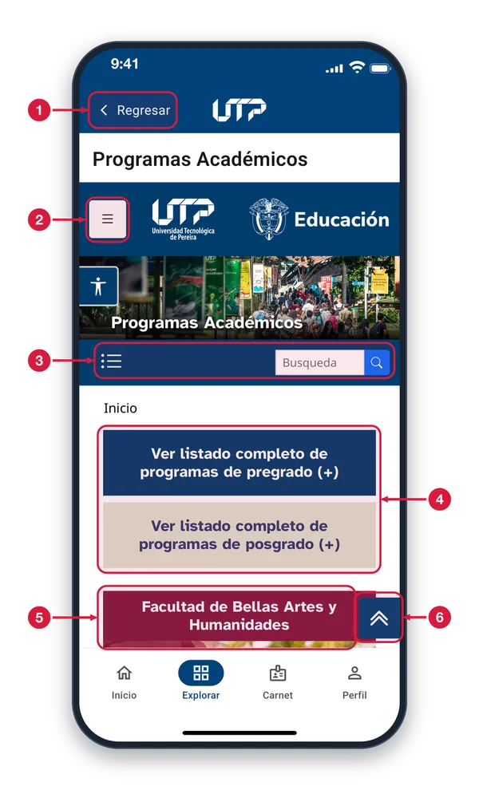
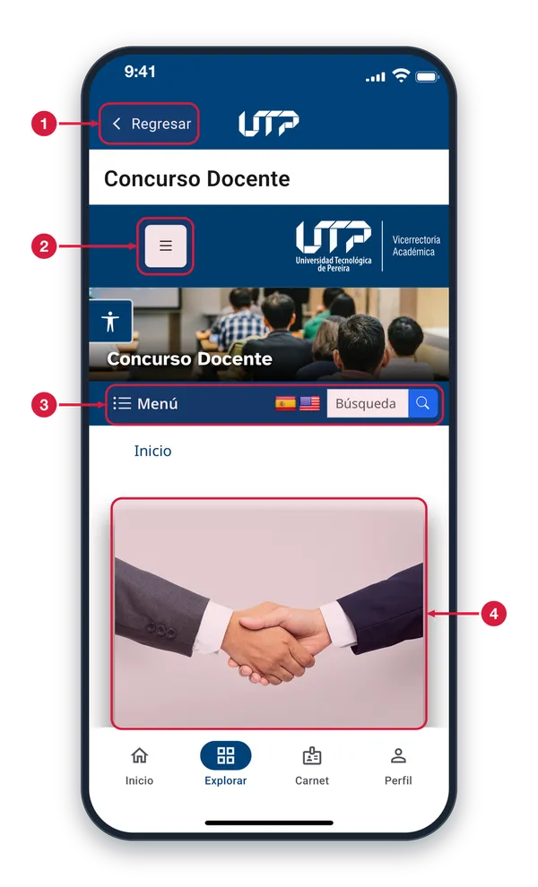
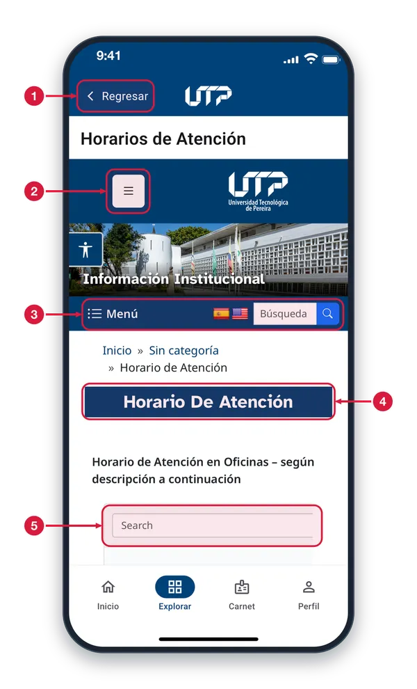
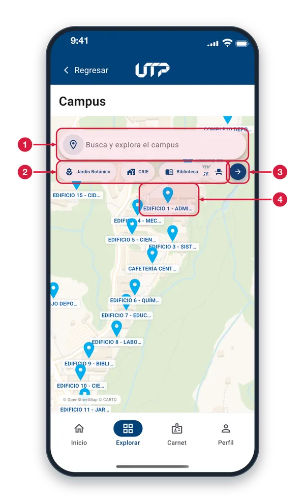
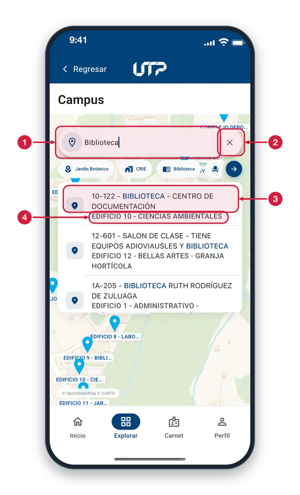
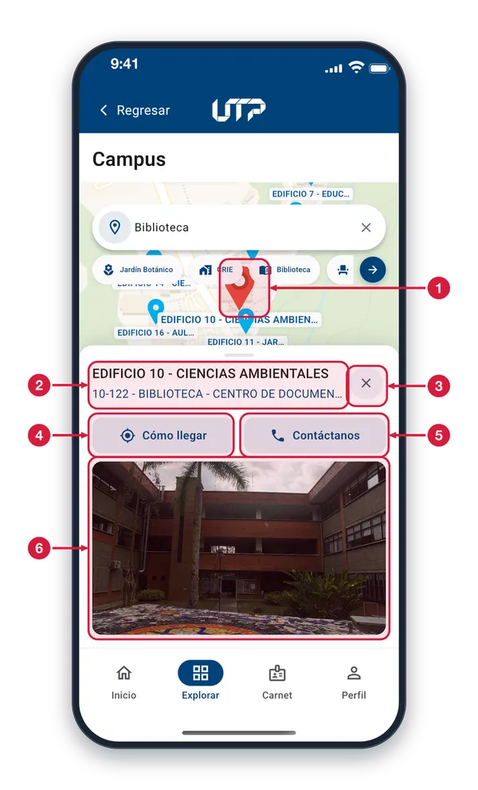
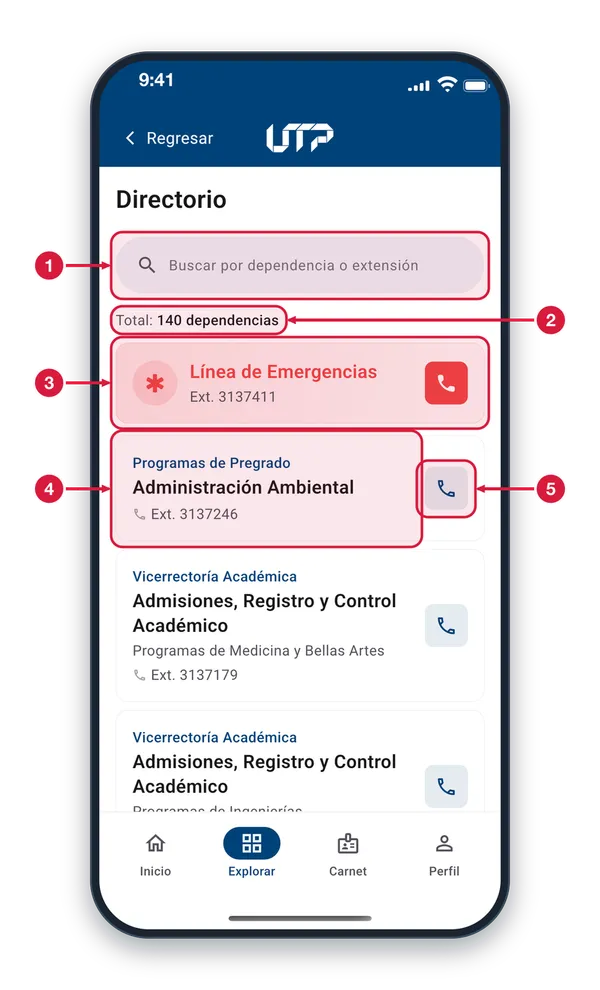
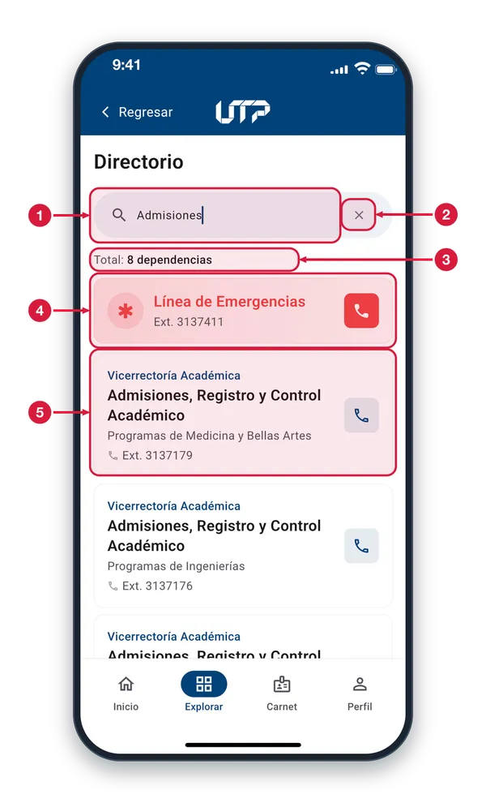
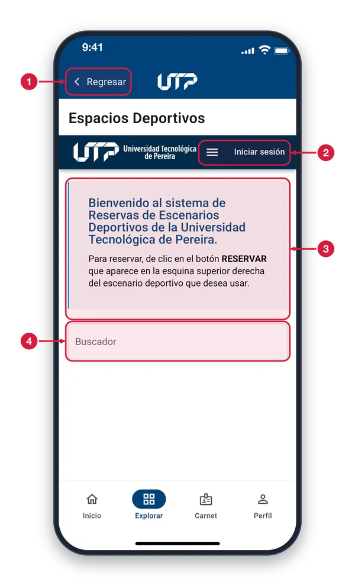

Programas, horarios de atención, campus y directorio.
¿Qué puedo ver sin loguearme en la app?
Inicio de SesiónAquí encontrarás el botón para el acceso a la aplicación.
Programas AcadémicosAquí podrás encontrar la oferta académica que ofrece la UTP en pregrado y posgrado.
EmisoraAccede a Universitaria Estéreo y disfruta de la emisora de la Universidad Tecnológica de Pereira, incluso con tu dispositivo bloqueado.
Concurso DocenteAquí encontrarás toda la información relacionada con el concurso docente.
CampusEncuentra tu camino en el campus con nuestro mapa interactivo. Ubica los lugares que necesites y, al tocar un edificio, mira cómo llegar o comunícate con su extensión.
Horarios de AtenciónAquí encontrarás los horarios de atención de las dependencias académicas y administrativas de la Universidad.
¿Qué puedo ver sin loguearme en la app?
DirectorioConsulta los teléfonos y extensiones de las dependencias de la Universidad. Desde tu celular puedes llamar directamente con el botón de teléfono.
BibliotecaAccede al sitio de la Biblioteca: servicios, catálogo y recursos de información científica.
EventosPodrás consultar los eventos programados en la Universidad Tecnológica de Pereira.
Espacios DeportivosAquí encontrarás la información de los espacios deportivos con los que cuenta el campus universitario.
NoticiasPodrás consultar las noticias y mantenerte al día con la Universidad Tecnológica de Pereira.
Tienda UTPPodrás encontrar los artículos disponibles de la Tienda UTP, los medios de pago y hacer tus compras.
¿Qué puedo ver sin loguearme en la app?
SOLIPodrás ingresar al portal de SOLI.
SugerenciasPodrás calificar la app y dejar tu opinión o sugerencia.
LicenciasPodrás consultar las licencias que emplea la app móvil.
PQRSPodrás presentar una solicitud, hacer seguimiento a tus solicitudes y conocer más acerca de las PQRS.
AuditoriosPodrás consultar la programación de los auditorios y solicitar espacios.
Política de PrivacidadPodrás consultar la política de privacidad y el tratamiento de datos de la Universidad Tecnológica de Pereira.
¿Qué puedo ver sin loguearme en la app?
Agregar ComentarioDesde Perfil puedes dejar un comentario sobre la app y calificar tu experiencia.
Modo OscuroPodrás cambiar al modo oscuro y disfrutar de la app con una experiencia visual más cómoda.
Manual de UsuarioConsulta este manual desde Explorar → Manual de Usuario cuando lo necesites.
SERVICIOS PÚBLICOS · ACADÉMICOS
Programas Académicos1 de 3
Consulta la oferta de pregrado y posgrado de la UTP en su página web. Entras desde Explorar, sin iniciar sesión.

Regresar Sales del módulo y vuelves a la pantalla anterior. Úsalo cuando termines de consultar la página.
Menú de la página Abre el menú del sitio web de la universidad para ir a otras secciones.
Menú y búsqueda El icono de lista despliega las secciones del sitio. En «Búsqueda» escribes una palabra, como el nombre de un programa, y tocas la lupa azul.
Pregrado y posgrado Toca «Ver listado completo de programas de pregrado» o «…de posgrado» para ver la lista completa de cada nivel.
Facultades Más abajo hay una tarjeta por cada facultad. Desliza hacia abajo para verlas y toca la que te interese para abrirla.
Volver arriba Te lleva de nuevo al inicio de la página, para no tener que deslizar hacia arriba.
Concurso Docente2 de 3
Lee la información del concurso docente en la página de la Vicerrectoría Académica. Entras desde Explorar.

Regresar Sales del módulo y vuelves a la pantalla anterior. Úsalo cuando termines de consultar la página.
Menú de la página Abre el menú del sitio con sus secciones, para ir a otras partes de la página.
Menú, idioma y búsqueda «Menú» despliega las secciones del sitio. Las banderas permiten elegir el idioma de la página. En «Búsqueda» escribes una palabra y tocas la lupa.
Contenido del concurso Aquí aparece la información del concurso. Desliza hacia abajo para leerla; los enlaces de correo o teléfono se abren en tu aplicación de correo o de llamadas.
Horarios de Atención3 de 3
Consulta los horarios de atención de las dependencias de la UTP en su página web. Entras desde Explorar.

Regresar Sales del módulo y vuelves a la pantalla anterior. Úsalo cuando termines de consultar la página.
Menú de la página Abre el menú del sitio de la universidad con sus secciones.
Menú, idioma y búsqueda «Menú» despliega las secciones del sitio. Las banderas permiten elegir el idioma de la página. En «Búsqueda» escribes una palabra y tocas la lupa.
Horario de atención Título de la sección. Debajo se explica que el horario de las oficinas se muestra según la descripción que sigue.
Search (buscador) Escribe una palabra, como el nombre de una oficina, para encontrar su horario en la lista. Desliza hacia abajo para ver el resto.
SERVICIOS PÚBLICOS · CAMPUS Y DIRECTORIO
Mapa del campus1 de 6
Ubica edificios y lugares de la UTP en un mapa. Entras desde Explorar, sin iniciar sesión.

Buscador del campus Toca y escribe el nombre de un lugar, un aula o un edificio. Aparece una lista de coincidencias para que elijas una.
Categorías Toca una categoría, como Jardín Botánico, CRIE o Biblioteca, para ver solo esos lugares. Tócala otra vez para quitar el filtro. Desliza para ver más.
Ver todas las categorías Abre una lista con todas las categorías, incluidos los edificios del 1 al 18, para que elijas una.
Marcador de edificio Cada pin es un edificio. Tócalo para abrir su detalle. Mueve el mapa con un dedo y acércalo o aléjalo con dos dedos.
Buscar un lugar del campus2 de 6
Escribe el nombre de un lugar y elige un resultado para verlo en el mapa del campus.

Campo de búsqueda Escribe parte del nombre; la lista se actualiza mientras escribes. No importan mayúsculas ni tildes. Si no hay coincidencias verás «No se encontraron resultados».
Borrar búsqueda Borra el texto y cierra la lista de resultados para volver a ver el mapa completo.
Resultado Muestra el lugar con la palabra buscada resaltada. Tócalo y el mapa se centra en su edificio con el detalle abierto. Los demás resultados funcionan igual (hasta 10; desliza).
Edificio del lugar Debajo del nombre aparece el edificio donde queda ese lugar.
Detalle de un edificio3 de 6
Al tocar un edificio en el mapa se abre este panel con su nombre, dos botones de ayuda y una foto.

Edificio seleccionado El pin rojo marca el edificio elegido y el mapa se centra en él. Toca otro pin para cambiar de edificio.
Nombre del edificio Muestra el nombre del edificio y, si llegaste desde una búsqueda o categoría, el lugar que buscabas dentro de él.
Cerrar Cierra el panel y vuelves a ver todo el mapa.
Cómo llegar Abre Google Maps dentro de la app con la ubicación del edificio. Toca «Regresar» para volver al mapa del campus.
Contáctanos Abre la aplicación de llamadas con el número de contacto del edificio. Si tu equipo no puede llamar, la app te muestra el número para marcarlo desde otro teléfono.
Foto del edificio Te ayuda a reconocer el edificio cuando llegues. Si la foto no carga, verás el aviso «Imagen no disponible».
Directorio4 de 6
Busca el teléfono de una dependencia de la UTP y llama desde la app. Entras desde Explorar, sin iniciar sesión.

Buscador Escribe el nombre de la dependencia o su extensión. La lista se filtra mientras escribes, sin importar mayúsculas ni tildes.
Total de dependencias Cuenta cuántas dependencias aparecen en la lista. El número cambia cuando buscas.
Línea de Emergencias Contacto de emergencias de la universidad, siempre al inicio de la lista. Toca la tarjeta o el botón rojo para llamar.
Tarjeta de dependencia Muestra el área, el nombre de la dependencia, su descripción y su extensión. Tócala para llamar. Las demás tarjetas funcionan igual; desliza para ver más.
Botón de llamada Abre el marcador del teléfono con el número completo de la dependencia. Si tu equipo no puede llamar, la app te muestra el número.
Buscar en el directorio5 de 6
Escribe parte del nombre o de la extensión y la lista muestra solo las dependencias que coinciden.

Campo de búsqueda Escribe lo que buscas. La lista se actualiza al instante y no importan mayúsculas ni tildes.
Borrar búsqueda Borra el texto y la lista vuelve a mostrar todas las dependencias.
Total de resultados Cuenta las dependencias que coinciden con tu búsqueda. Si no hay ninguna, verás «No se encontraron resultados».
Línea de Emergencias Sigue en el primer lugar aunque busques otra cosa. Tócala para llamar a emergencias.
Resultado de la búsqueda Cada tarjeta es una dependencia que coincide. Tócala o toca su botón de llamada para marcar su extensión. Desliza para ver los demás resultados.
Espacios Deportivos6 de 6
Consulta los escenarios deportivos de la UTP en el sistema de reservas. Entras desde Explorar.

Regresar Sales del módulo y vuelves a la pantalla anterior. Úsalo cuando termines de consultar la página.
Menú e Iniciar sesión El icono de tres rayas abre el menú del sistema de reservas. «Iniciar sesión» te permite ingresar a ese sistema con tu usuario.
Cómo reservar Explica el proceso: toca el botón RESERVAR, en la esquina superior derecha del escenario que quieras usar.
Buscador Escribe el nombre de un escenario para encontrarlo más rápido. Desliza hacia abajo para ver la lista.